Arte en gouache · mapuches
Ver el README.
0 · Caras: fijar la cara 6/6

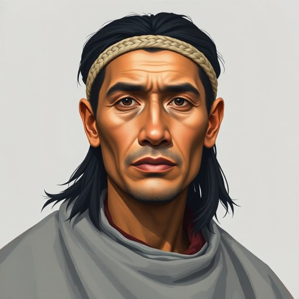
prompt
Gouache painting for a historical strategy game, flat opaque color shapes, simple graphic forms, matte paper texture, limited palette. Portrait of a Mapuche man from Araucanía in southern Chile, a grown adult in his early thirties, with a mature face: a broad face, a strong wide jaw, high cheekbones, a straight wide nose, dark eyes, faint expression lines around the eyes, light copper-brown skin, dark brown lips the same tone as his skin, thick straight black hair to the shoulders held by a woven wool headband, a thick adult neck, broad shoulders and adult body proportions. He wears a plain undyed grey wool poncho. Head and shoulders portrait, the head fills the upper half of the frame, face turned slightly to the side, plain flat light grey background.

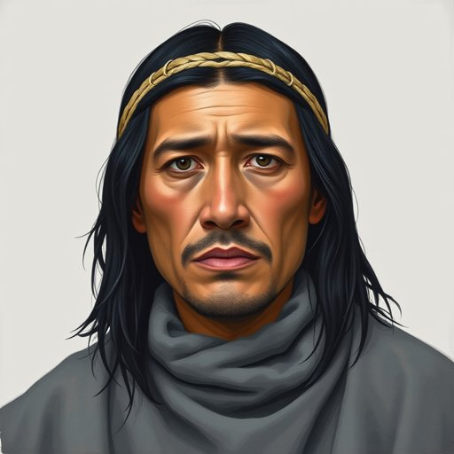
prompt
Gouache painting for a historical strategy game, flat opaque color shapes, simple graphic forms, matte paper texture, limited palette. Portrait of a Mapuche man from Araucanía in southern Chile, a grown adult in his early thirties, with a mature face: a broad face, a strong wide jaw, high cheekbones, a large slightly hooked nose with a wide base, dark eyes, faint expression lines around the eyes, light copper-brown skin, dark brown lips the same tone as his skin, thick straight black hair to the shoulders held by a woven wool headband, a thick adult neck, broad shoulders and adult body proportions. He wears a plain undyed grey wool poncho. Head and shoulders portrait, the head fills the upper half of the frame, face turned slightly to the side, plain flat light grey background.

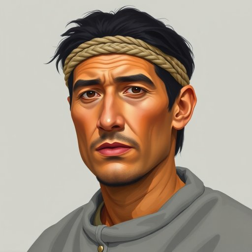
prompt
Gouache painting for a historical strategy game, flat opaque color shapes, simple graphic forms, matte paper texture, limited palette. Portrait of a Mapuche man from Araucanía in southern Chile, a grown adult in his early thirties, with a mature face: a broad face, a strong wide jaw, high cheekbones, a wide flat nose bridge and a rounded nose tip, dark eyes, faint expression lines around the eyes, light copper-brown skin, dark brown lips the same tone as his skin, thick straight black hair to the shoulders held by a woven wool headband, a thick adult neck, broad shoulders and adult body proportions. He wears a plain undyed grey wool poncho. Head and shoulders portrait, the head fills the upper half of the frame, face turned slightly to the side, plain flat light grey background.

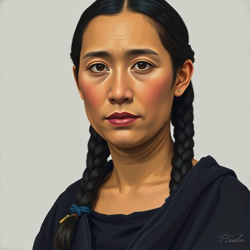
prompt
Gouache painting for a historical strategy game, flat opaque color shapes, simple graphic forms, matte paper texture, limited palette. Portrait of a Mapuche woman from Araucanía in southern Chile, a grown adult in her early thirties, with a mature face: a broad round face, high cheekbones, a straight wide nose, dark eyes, faint expression lines, light copper-brown skin, dark brownish lips, thick straight black hair parted in the middle in two long braids wrapped with dark blue wool ribbons, adult shoulders and adult body proportions. She wears a black wool dress pinned on one shoulder and a dark wool shawl. Head and shoulders portrait, the head fills the upper half of the frame, face turned slightly to the side, plain flat light grey background.

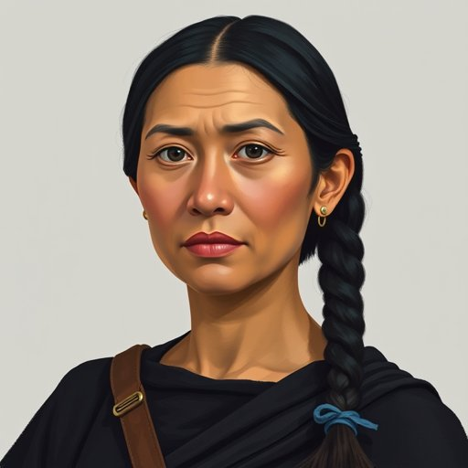
prompt
Gouache painting for a historical strategy game, flat opaque color shapes, simple graphic forms, matte paper texture, limited palette. Portrait of a Mapuche woman from Araucanía in southern Chile, a grown adult in her early thirties, with a mature face: a broad round face, high cheekbones, a short wide nose with a rounded tip, dark eyes, faint expression lines, light copper-brown skin, dark brownish lips, thick straight black hair parted in the middle in two long braids wrapped with dark blue wool ribbons, adult shoulders and adult body proportions. She wears a black wool dress pinned on one shoulder and a dark wool shawl. Head and shoulders portrait, the head fills the upper half of the frame, face turned slightly to the side, plain flat light grey background.

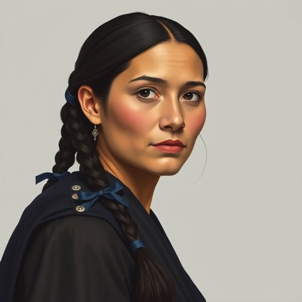
prompt
Gouache painting for a historical strategy game, flat opaque color shapes, simple graphic forms, matte paper texture, limited palette. Portrait of a Mapuche woman from Araucanía in southern Chile, a grown adult in her early thirties, with a mature face: a broad round face, high cheekbones, a slightly convex nose with a wide base, dark eyes, faint expression lines, light copper-brown skin, dark brownish lips, thick straight black hair parted in the middle in two long braids wrapped with dark blue wool ribbons, adult shoulders and adult body proportions. She wears a black wool dress pinned on one shoulder and a dark wool shawl. Head and shoulders portrait, the head fills the upper half of the frame, face turned slightly to the side, plain flat light grey background.
1 · Unidades (un arte por unidad: ícono y retrato) 18/18

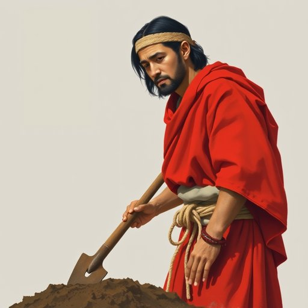

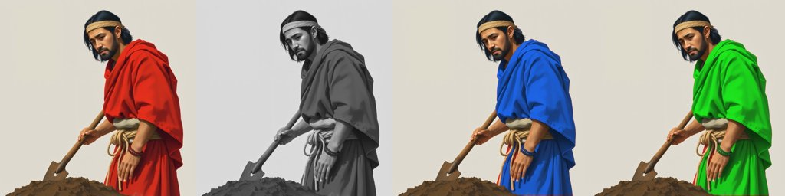
prompt
Gouache painting for a historical strategy game, flat opaque color shapes, simple graphic forms, matte paper texture, limited palette. A farmer working the soil with a long wooden digging stick with a pointed end. He wears a plain solid bright red wool poncho, one flat uniform red color over a wrapped wool loincloth, and a plain woven wool headband (trarilonko). The figure is a Mapuche man from Araucanía in southern Chile, a grown adult in his early thirties, with a mature face: a broad face, a strong wide jaw, high cheekbones, a straight wide nose, dark eyes, faint expression lines around the eyes, light copper-brown skin, dark brown lips the same tone as his skin, thick straight black hair to the shoulders held by a woven wool headband, a thick adult neck, broad shoulders and adult body proportions. Natural undyed wool and leather tones for everything except the red poncho. Waist-up portrait of one single person: the head, shoulders and hands fill the frame, the tool or weapon visible next to the body, three-quarter view, isolated on a plain flat light grey background.

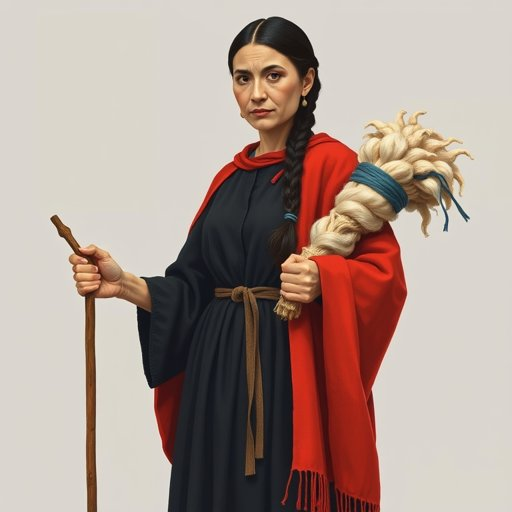

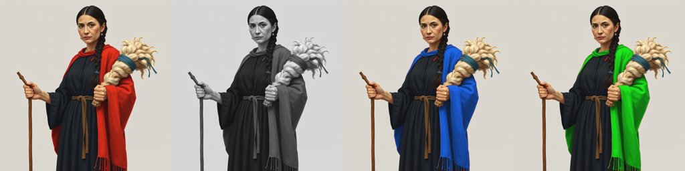
prompt
Gouache painting for a historical strategy game, flat opaque color shapes, simple graphic forms, matte paper texture, limited palette. A woman spinning wool while standing: a long thin wooden spindle in one hand, a bundle of raw cream wool held up in the other. She wears a long black wool dress and a plain solid bright red wool poncho, one flat uniform red color as a shawl over her shoulders, pinned at the chest. The figure is a Mapuche woman from Araucanía in southern Chile, a grown adult in her early thirties, with a mature face: a broad round face, high cheekbones, a short wide nose with a rounded tip, dark eyes, faint expression lines, light copper-brown skin, dark brownish lips, thick straight black hair parted in the middle in two long braids wrapped with dark blue wool ribbons, adult shoulders and adult body proportions. Natural undyed wool and leather tones for everything except the red poncho. Waist-up portrait of one single person: the head, shoulders and hands fill the frame, the tool or weapon visible next to the body, three-quarter view, isolated on a plain flat light grey background.

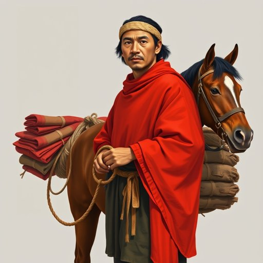

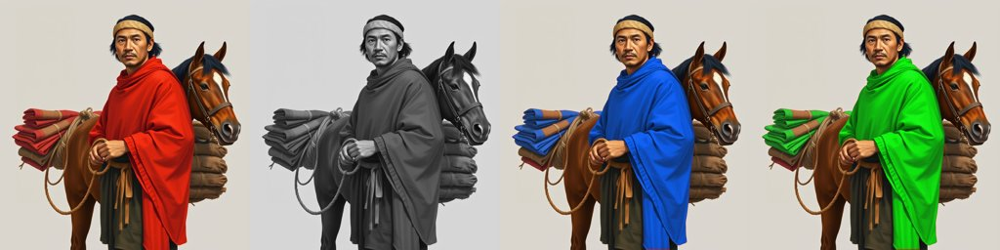
Conchavo de ganado y ponchos, siglo XVIII.
prompt
Gouache painting for a historical strategy game, flat opaque color shapes, simple graphic forms, matte paper texture, limited palette. A frontier trader leading a sturdy compact brown Criollo horse by a rawhide rope; the horse carries a load of folded woven ponchos tied with rope. He wears a plain solid bright red wool poncho, one flat uniform red color and a plain woven wool headband (trarilonko). The figure is a Mapuche man from Araucanía in southern Chile, a grown adult in his early thirties, with a mature face: a broad face, a strong wide jaw, high cheekbones, a straight wide nose, dark eyes, faint expression lines around the eyes, light copper-brown skin, dark brown lips the same tone as his skin, thick straight black hair to the shoulders held by a woven wool headband, a thick adult neck, broad shoulders and adult body proportions. Natural undyed wool and leather tones for everything except the red poncho. Waist-up portrait of one single person: the head, shoulders and hands fill the frame, the tool or weapon visible next to the body, three-quarter view, isolated on a plain flat light grey background.

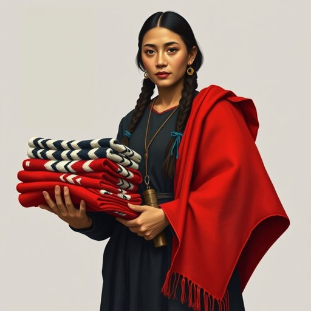

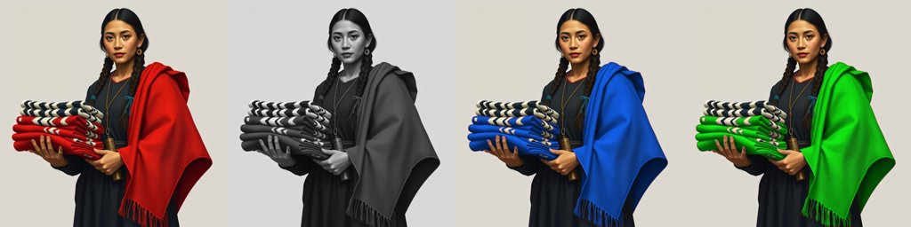
Las mujeres tejían los ponchos del conchavo.
prompt
Gouache painting for a historical strategy game, flat opaque color shapes, simple graphic forms, matte paper texture, limited palette. A woman trader holding a stack of folded woven ponchos with stepped geometric patterns in black and white. She wears a long black wool dress and a plain solid bright red wool poncho, one flat uniform red color as a shawl pinned at the chest. The figure is a Mapuche woman from Araucanía in southern Chile, a grown adult in her early thirties, with a mature face: a broad round face, high cheekbones, a short wide nose with a rounded tip, dark eyes, faint expression lines, light copper-brown skin, dark brownish lips, thick straight black hair parted in the middle in two long braids wrapped with dark blue wool ribbons, adult shoulders and adult body proportions. Natural undyed wool and leather tones for everything except the red poncho. Waist-up portrait of one single person: the head, shoulders and hands fill the frame, the tool or weapon visible next to the body, three-quarter view, isolated on a plain flat light grey background.

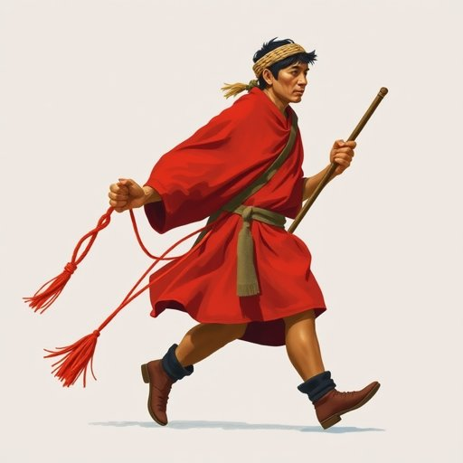

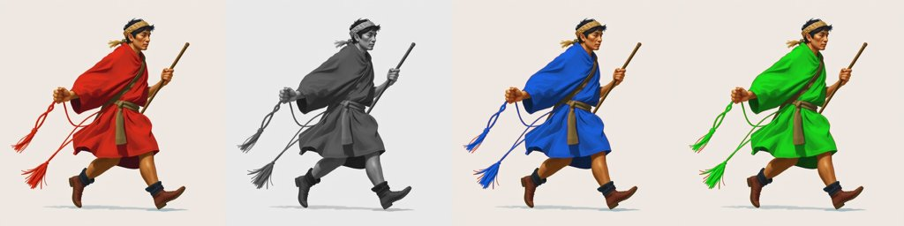
El pron, la cuerda de nudos para contar los días hasta la junta.
antes: v1

prompt
Gouache painting for a historical strategy game, flat opaque color shapes, simple graphic forms, matte paper texture, limited palette. A messenger walking fast, holding a knotted wool cord in one hand and a short walking staff in the other. He wears a plain solid bright red wool poncho, one flat uniform red color and a plain woven wool headband (trarilonko). The figure is a Mapuche man from Araucanía in southern Chile, a grown adult in his early thirties, with a mature face: a broad face, a strong wide jaw, high cheekbones, a straight wide nose, dark eyes, faint expression lines around the eyes, light copper-brown skin, dark brown lips the same tone as his skin, thick straight black hair to the shoulders held by a woven wool headband, a thick adult neck, broad shoulders and adult body proportions. Natural undyed wool and leather tones for everything except the red poncho. Waist-up portrait of one single person: the head, shoulders and hands fill the frame, the tool or weapon visible next to the body, three-quarter view, isolated on a plain flat light grey background.

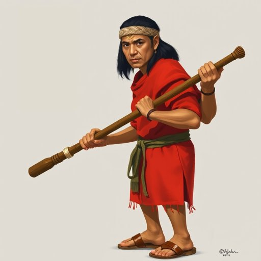

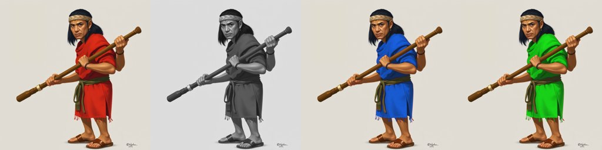
prompt
Gouache painting for a historical strategy game, flat opaque color shapes, simple graphic forms, matte paper texture, limited palette. A warrior holding a heavy wooden club with a thick curved head, ready to strike. He wears a plain solid bright red wool poncho, one flat uniform red color cut short at the waist, a woven wool headband (trarilonko), and leather sandals. The figure is a Mapuche man from Araucanía in southern Chile, a grown adult in his early thirties, with a mature face: a broad face, a strong wide jaw, high cheekbones, a straight wide nose, dark eyes, faint expression lines around the eyes, light copper-brown skin, dark brown lips the same tone as his skin, thick straight black hair to the shoulders held by a woven wool headband, a thick adult neck, broad shoulders and adult body proportions. Natural undyed wool and leather tones for everything except the red poncho. Waist-up portrait of one single person: the head, shoulders and hands fill the frame, the tool or weapon visible next to the body, three-quarter view, isolated on a plain flat light grey background.

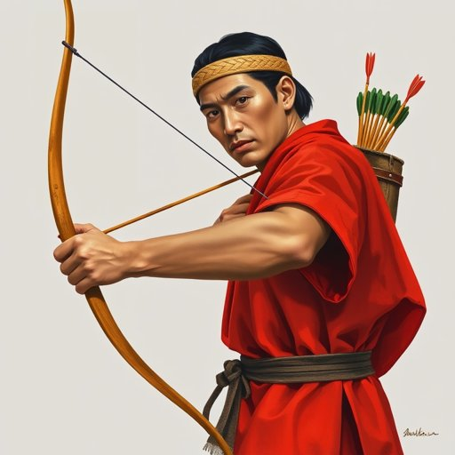

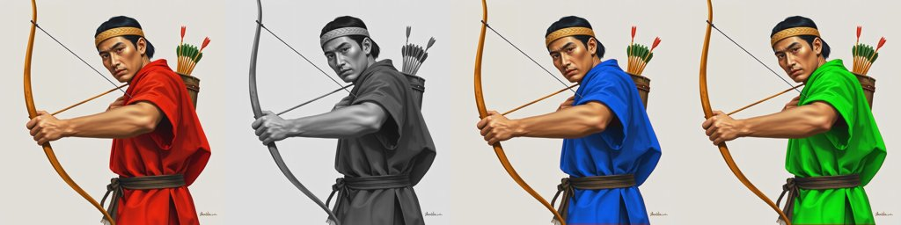
prompt
Gouache painting for a historical strategy game, flat opaque color shapes, simple graphic forms, matte paper texture, limited palette. An archer drawing a short wooden bow, a quiver of cane arrows at his back. He wears a plain solid bright red wool poncho, one flat uniform red color cut short at the waist and a woven wool headband (trarilonko). The figure is a Mapuche man from Araucanía in southern Chile, a grown adult in his early thirties, with a mature face: a broad face, a strong wide jaw, high cheekbones, a straight wide nose, dark eyes, faint expression lines around the eyes, light copper-brown skin, dark brown lips the same tone as his skin, thick straight black hair to the shoulders held by a woven wool headband, a thick adult neck, broad shoulders and adult body proportions. Natural undyed wool and leather tones for everything except the red poncho. Waist-up portrait of one single person: the head, shoulders and hands fill the frame, the tool or weapon visible next to the body, three-quarter view, isolated on a plain flat light grey background.

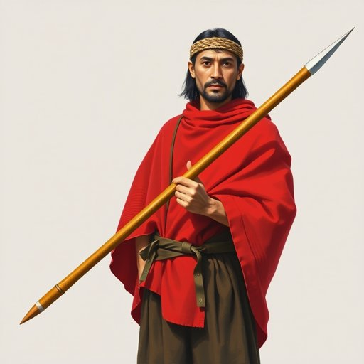

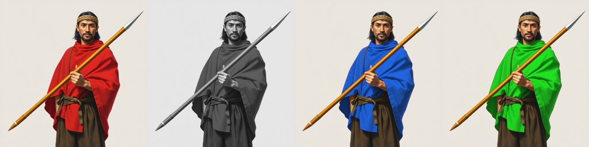
La lanza de colihue (waiki).
antes: v1

prompt
Gouache painting for a historical strategy game, flat opaque color shapes, simple graphic forms, matte paper texture, limited palette. A pikeman holding upright a very long lance of colihue cane, twice his height, with a sharp fire-hardened point. He wears a plain solid bright red wool poncho, one flat uniform red color cut short at the waist and a woven wool headband (trarilonko). The figure is a Mapuche man from Araucanía in southern Chile, a grown adult in his early thirties, with a mature face: a broad face, a strong wide jaw, high cheekbones, a straight wide nose, dark eyes, faint expression lines around the eyes, light copper-brown skin, dark brown lips the same tone as his skin, thick straight black hair to the shoulders held by a woven wool headband, a thick adult neck, broad shoulders and adult body proportions. Natural undyed wool and leather tones for everything except the red poncho. Waist-up portrait of one single person: the head, shoulders and hands fill the frame, the tool or weapon visible next to the body, three-quarter view, isolated on a plain flat light grey background.

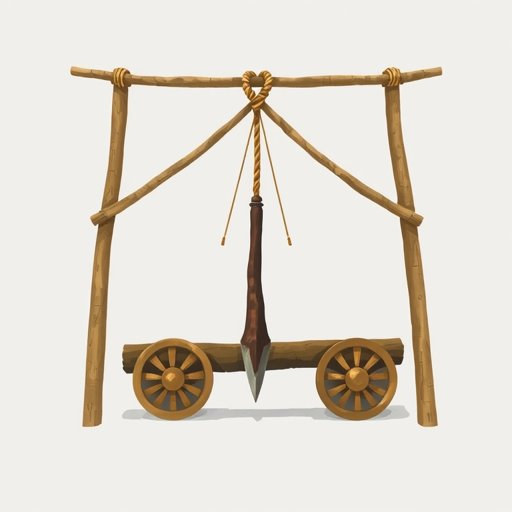
antes: v1 v2 v3


prompt
Gouache painting for a historical strategy game, flat opaque color shapes, simple graphic forms, matte paper texture, limited palette. A battering ram seen from the side: a long heavy tree trunk with a sharpened point, hanging by rawhide ropes under a simple wooden frame of crossed poles shaped like a long tent, the frame standing on four solid round wooden wheels; the pointed trunk sticks out in front of the frame. Single object centered, clear silhouette, isolated on a plain flat light grey background, three-quarter view.

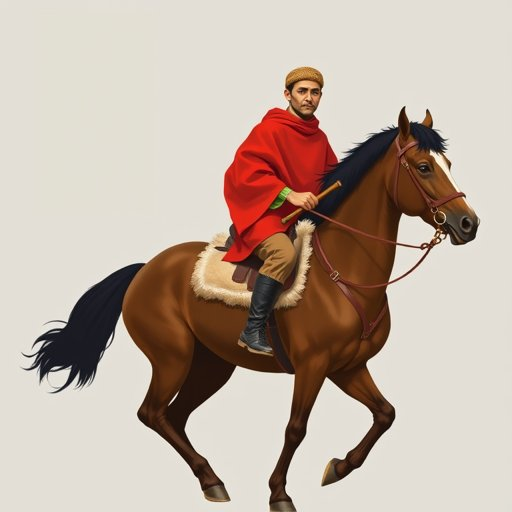

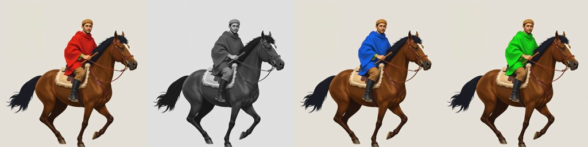
prompt
Gouache painting for a historical strategy game, flat opaque color shapes, simple graphic forms, matte paper texture, limited palette. A rider on a sturdy compact brown Criollo horse, riding with a sheepskin saddle pad, holding a long colihue cane lance. He wears a plain solid bright red wool poncho, one flat uniform red color and a woven wool headband (trarilonko). The rider is a Mapuche man from Araucanía in southern Chile, a grown adult in his early thirties, with a mature face: a broad face, a strong wide jaw, high cheekbones, a straight wide nose, dark eyes, faint expression lines around the eyes, light copper-brown skin, dark brown lips the same tone as his skin, thick straight black hair to the shoulders held by a woven wool headband, a thick adult neck, broad shoulders and adult body proportions. Natural undyed wool and leather tones for everything except the red poncho. One single rider and horse, the whole horse visible, three-quarter view, isolated on a plain flat light grey background.

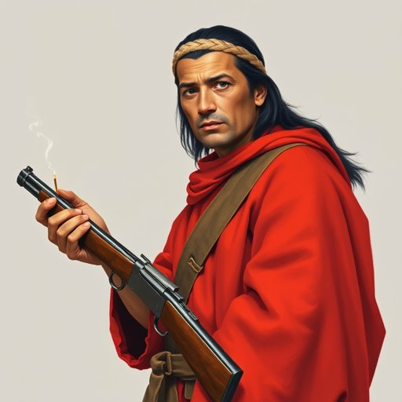

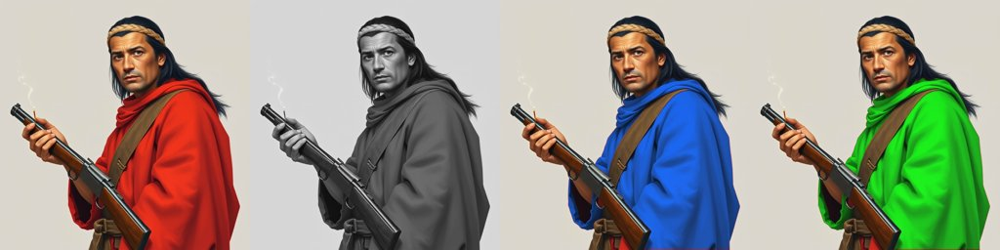
prompt
Gouache painting for a historical strategy game, flat opaque color shapes, simple graphic forms, matte paper texture, limited palette. A warrior holding a captured Spanish arquebus, a long matchlock gun with a wooden stock, a smoking slow-match cord in his hand. He wears a plain solid bright red wool poncho, one flat uniform red color and a woven wool headband (trarilonko). The figure is a Mapuche man from Araucanía in southern Chile, a grown adult in his early thirties, with a mature face: a broad face, a strong wide jaw, high cheekbones, a straight wide nose, dark eyes, faint expression lines around the eyes, light copper-brown skin, dark brown lips the same tone as his skin, thick straight black hair to the shoulders held by a woven wool headband, a thick adult neck, broad shoulders and adult body proportions. Natural undyed wool and leather tones for everything except the red poncho. Waist-up portrait of one single person: the head, shoulders and hands fill the frame, the tool or weapon visible next to the body, three-quarter view, isolated on a plain flat light grey background.

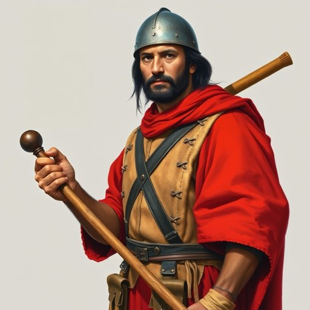

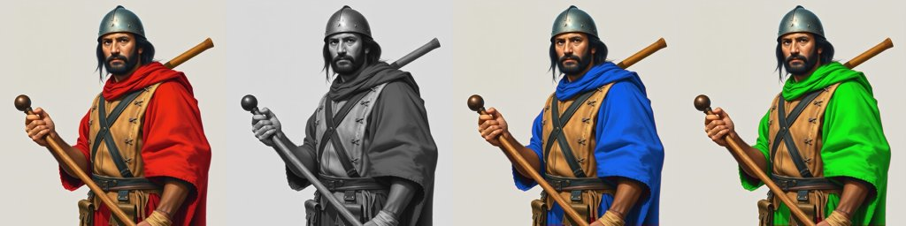
prompt
Gouache painting for a historical strategy game, flat opaque color shapes, simple graphic forms, matte paper texture, limited palette. A veteran warrior holding a heavy wooden club, wearing a hardened rawhide cuirass laced at the sides over a plain solid bright red wool poncho, one flat uniform red color, and a captured steel Spanish morion helmet. The figure is a Mapuche man from Araucanía in southern Chile, a grown adult in his early thirties, with a mature face: a broad face, a strong wide jaw, high cheekbones, a straight wide nose, dark eyes, faint expression lines around the eyes, light copper-brown skin, dark brown lips the same tone as his skin, thick straight black hair to the shoulders held by a woven wool headband, a thick adult neck, broad shoulders and adult body proportions. Natural undyed wool and leather tones for everything except the red poncho. Waist-up portrait of one single person: the head, shoulders and hands fill the frame, the tool or weapon visible next to the body, three-quarter view, isolated on a plain flat light grey background.

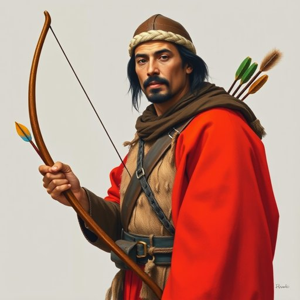

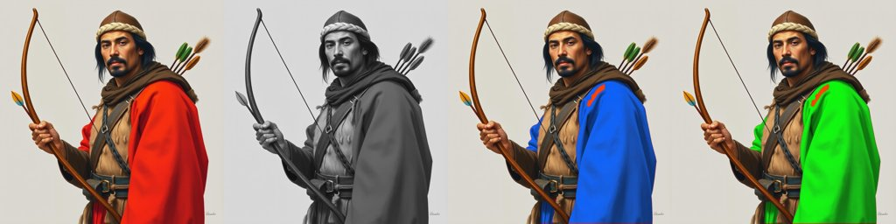
prompt
Gouache painting for a historical strategy game, flat opaque color shapes, simple graphic forms, matte paper texture, limited palette. A veteran archer holding a short bow and an arrow, wearing a hardened rawhide cuirass over a plain solid bright red wool poncho, one flat uniform red color and a rawhide helmet. The figure is a Mapuche man from Araucanía in southern Chile, a grown adult in his early thirties, with a mature face: a broad face, a strong wide jaw, high cheekbones, a straight wide nose, dark eyes, faint expression lines around the eyes, light copper-brown skin, dark brown lips the same tone as his skin, thick straight black hair to the shoulders held by a woven wool headband, a thick adult neck, broad shoulders and adult body proportions. Natural undyed wool and leather tones for everything except the red poncho. Waist-up portrait of one single person: the head, shoulders and hands fill the frame, the tool or weapon visible next to the body, three-quarter view, isolated on a plain flat light grey background.

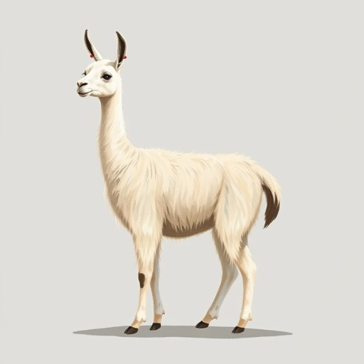
prompt
Gouache painting for a historical strategy game, flat opaque color shapes, simple graphic forms, matte paper texture, limited palette. A single a chilihueque, the native camelid of the Mapuche: a llama-like animal with a long neck, a small head, tall upright banana-shaped ears and thick shaggy white and brown wool, shorter and woollier than a llama, with red wool tassels tied to its ears. One single animal standing, the whole body visible, three-quarter view, isolated on a plain flat light grey background.

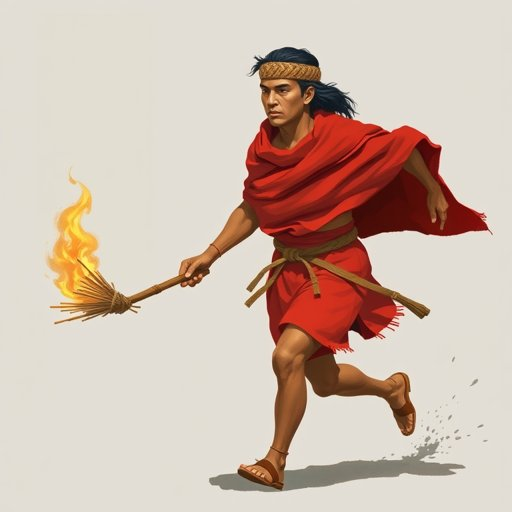

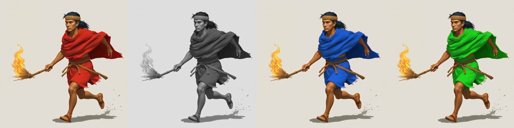
La quema de fuertes y ciudades en el alzamiento de 1598–1604.
prompt
Gouache painting for a historical strategy game, flat opaque color shapes, simple graphic forms, matte paper texture, limited palette. A warrior running with a burning torch made of a bundle of dry reeds tied together, flames and smoke trailing behind. He wears a plain solid bright red wool poncho, one flat uniform red color cut short at the waist and a woven wool headband (trarilonko). The figure is a Mapuche man from Araucanía in southern Chile, a grown adult in his early thirties, with a mature face: a broad face, a strong wide jaw, high cheekbones, a straight wide nose, dark eyes, faint expression lines around the eyes, light copper-brown skin, dark brown lips the same tone as his skin, thick straight black hair to the shoulders held by a woven wool headband, a thick adult neck, broad shoulders and adult body proportions. Natural undyed wool and leather tones for everything except the red poncho. Waist-up portrait of one single person: the head, shoulders and hands fill the frame, the tool or weapon visible next to the body, three-quarter view, isolated on a plain flat light grey background.

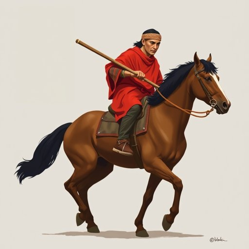

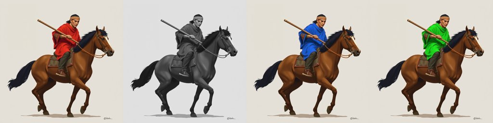
Infantería montada: va a caballo y pelea a pie.
prompt
Gouache painting for a historical strategy game, flat opaque color shapes, simple graphic forms, matte paper texture, limited palette. A warrior on a sturdy compact brown Criollo horse, riding bareback, holding a heavy wooden club, about to jump down to fight on foot. He wears a plain solid bright red wool poncho, one flat uniform red color and a woven wool headband (trarilonko). The rider is a Mapuche man from Araucanía in southern Chile, a grown adult in his early thirties, with a mature face: a broad face, a strong wide jaw, high cheekbones, a straight wide nose, dark eyes, faint expression lines around the eyes, light copper-brown skin, dark brown lips the same tone as his skin, thick straight black hair to the shoulders held by a woven wool headband, a thick adult neck, broad shoulders and adult body proportions. Natural undyed wool and leather tones for everything except the red poncho. One single rider and horse, the whole horse visible, three-quarter view, isolated on a plain flat light grey background.

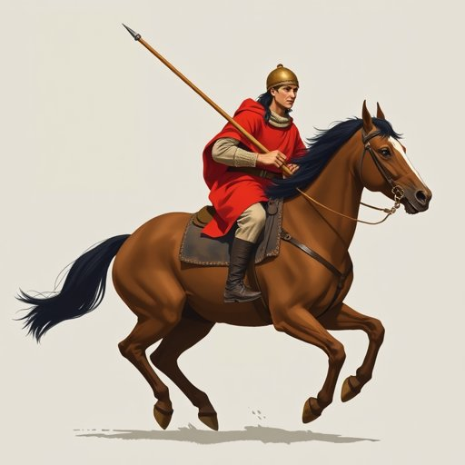

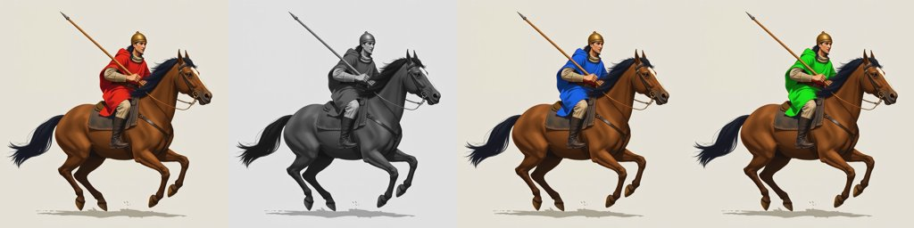
prompt
Gouache painting for a historical strategy game, flat opaque color shapes, simple graphic forms, matte paper texture, limited palette. A heavy lancer on a sturdy compact brown Criollo horse charging with a very long colihue cane lance with an iron point, wearing a hardened rawhide cuirass over a plain solid bright red wool poncho, one flat uniform red color, and a rawhide helmet. The rider is a Mapuche man from Araucanía in southern Chile, a grown adult in his early thirties, with a mature face: a broad face, a strong wide jaw, high cheekbones, a straight wide nose, dark eyes, faint expression lines around the eyes, light copper-brown skin, dark brown lips the same tone as his skin, thick straight black hair to the shoulders held by a woven wool headband, a thick adult neck, broad shoulders and adult body proportions. Natural undyed wool and leather tones for everything except the red poncho. One single rider and horse, the whole horse visible, three-quarter view, isolated on a plain flat light grey background.

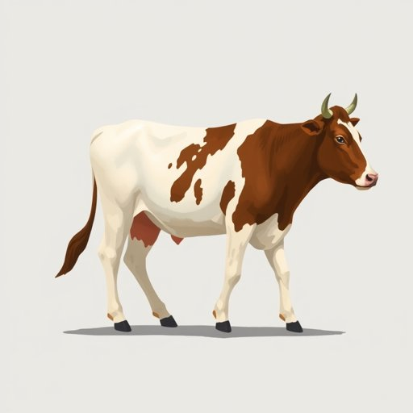
Ganado arreado en un malón.
prompt
Gouache painting for a historical strategy game, flat opaque color shapes, simple graphic forms, matte paper texture, limited palette. A single brown and white cow with short horns, the cattle of the Spanish frontier, walking. One single animal standing, the whole body visible, three-quarter view, isolated on a plain flat light grey background.
2 · Edificios, hitos y maravilla (un ícono por edificio) 18/18

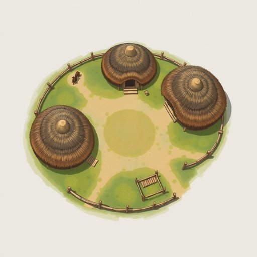
No hay capital: cada lof es un centro chico.
prompt
Gouache painting for a historical strategy game, flat opaque color shapes, simple graphic forms, matte paper texture, limited palette. A Mapuche family settlement: three large oval thatched houses around an open yard, a small wooden pole corral with a few animals, firewood stacked, a garden of potatoes and maize. Single building, three-quarter view from above like a strategy game icon, the whole building visible and centered, isolated on a plain flat light grey background. Mapuche architecture of the temperate forests of southern Chile: rounded or oval houses with a thick thatched roof of grass and reeds that reaches almost to the ground, walls of wooden poles and woven branches, a low doorway facing east, wooden pole fences, green meadows and tall forest around.

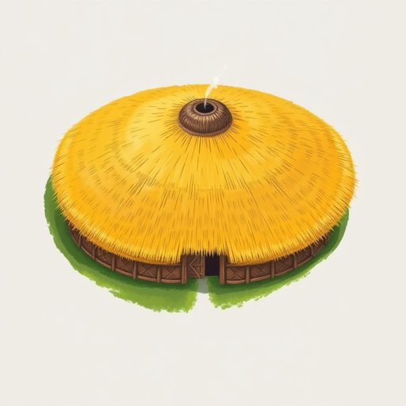
prompt
Gouache painting for a historical strategy game, flat opaque color shapes, simple graphic forms, matte paper texture, limited palette. A single large oval Mapuche house with a thick rounded thatched roof of golden grass reaching almost to the ground, a small low doorway, smoke rising from a hole at the top of the roof. Single building, three-quarter view from above like a strategy game icon, the whole building visible and centered, isolated on a plain flat light grey background. Mapuche architecture of the temperate forests of southern Chile: rounded or oval houses with a thick thatched roof of grass and reeds that reaches almost to the ground, walls of wooden poles and woven branches, a low doorway facing east, wooden pole fences, green meadows and tall forest around.

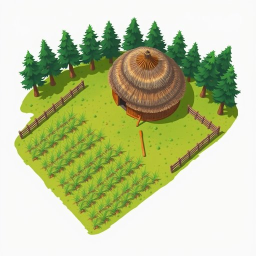
prompt
Gouache painting for a historical strategy game, flat opaque color shapes, simple graphic forms, matte paper texture, limited palette. A field of potatoes, maize and quinoa plants in rows at the edge of the forest, a small thatched shelter and a wooden digging stick leaning on it. Single building, three-quarter view from above like a strategy game icon, the whole building visible and centered, isolated on a plain flat light grey background. Mapuche architecture of the temperate forests of southern Chile: rounded or oval houses with a thick thatched roof of grass and reeds that reaches almost to the ground, walls of wooden poles and woven branches, a low doorway facing east, wooden pole fences, green meadows and tall forest around.

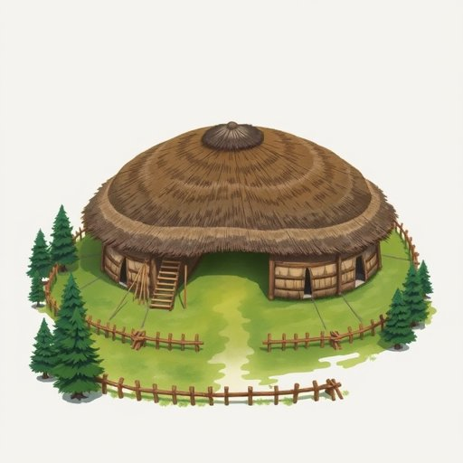
Historiadores (01 R5): no hay registro de casas de guerra; se muestra el lugar de junta.
antes: v1

prompt
Gouache painting for a historical strategy game, flat opaque color shapes, simple graphic forms, matte paper texture, limited palette. A long open-sided shelter of wooden posts with a thatched gable roof in a small forest clearing, a rack of long cane lances leaning against it, wooden clubs on the ground. Single building, three-quarter view from above like a strategy game icon, the whole building visible and centered, isolated on a plain flat light grey background. Mapuche architecture of the temperate forests of southern Chile: rounded or oval houses with a thick thatched roof of grass and reeds that reaches almost to the ground, walls of wooden poles and woven branches, a low doorway facing east, wooden pole fences, green meadows and tall forest around.

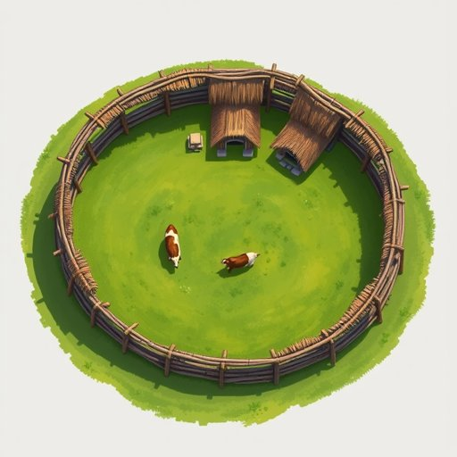
prompt
Gouache painting for a historical strategy game, flat opaque color shapes, simple graphic forms, matte paper texture, limited palette. A large round corral of rough wooden poles and branches on a green meadow, a few brown and white cows and a chilihueque inside, a small thatched shelter beside it. Single building, three-quarter view from above like a strategy game icon, the whole building visible and centered, isolated on a plain flat light grey background. Mapuche architecture of the temperate forests of southern Chile: rounded or oval houses with a thick thatched roof of grass and reeds that reaches almost to the ground, walls of wooden poles and woven branches, a low doorway facing east, wooden pole fences, green meadows and tall forest around.

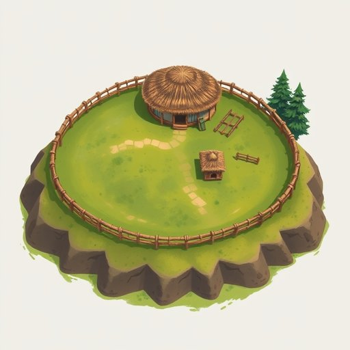
Pukara de madera y tierra, sin cantería (Dillehay, 2007).
prompt
Gouache painting for a historical strategy game, flat opaque color shapes, simple graphic forms, matte paper texture, limited palette. A frontier hill fort of wood and earth on top of a hill: a ring of sharpened log palisade, a deep ditch and an earth bank around it, a few thatched houses inside, no stone. Single building, three-quarter view from above like a strategy game icon, the whole building visible and centered, isolated on a plain flat light grey background. Mapuche architecture of the temperate forests of southern Chile: rounded or oval houses with a thick thatched roof of grass and reeds that reaches almost to the ground, walls of wooden poles and woven branches, a low doorway facing east, wooden pole fences, green meadows and tall forest around.

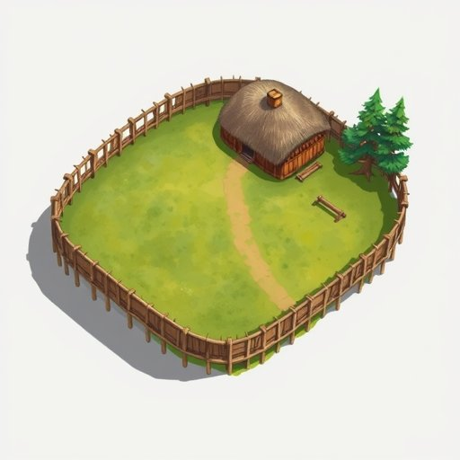
prompt
Gouache painting for a historical strategy game, flat opaque color shapes, simple graphic forms, matte paper texture, limited palette. A straight segment of a palisade of sharpened upright logs tied together, with a ditch dug in front of it. Single building, three-quarter view from above like a strategy game icon, the whole building visible and centered, isolated on a plain flat light grey background. Mapuche architecture of the temperate forests of southern Chile: rounded or oval houses with a thick thatched roof of grass and reeds that reaches almost to the ground, walls of wooden poles and woven branches, a low doorway facing east, wooden pole fences, green meadows and tall forest around.

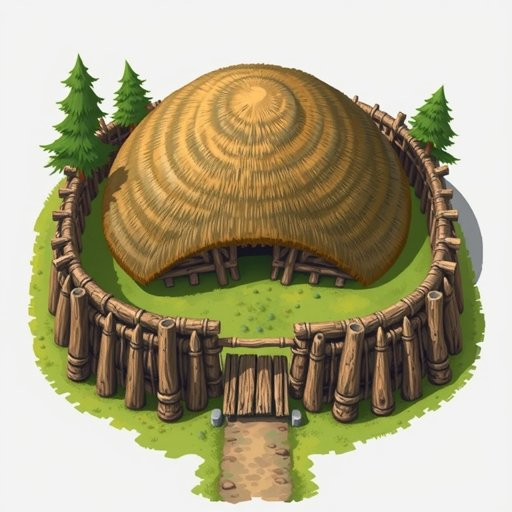
prompt
Gouache painting for a historical strategy game, flat opaque color shapes, simple graphic forms, matte paper texture, limited palette. A wooden gate of heavy logs in a sharpened log palisade, with a ditch in front and a log bridge. Single building, three-quarter view from above like a strategy game icon, the whole building visible and centered, isolated on a plain flat light grey background. Mapuche architecture of the temperate forests of southern Chile: rounded or oval houses with a thick thatched roof of grass and reeds that reaches almost to the ground, walls of wooden poles and woven branches, a low doorway facing east, wooden pole fences, green meadows and tall forest around.

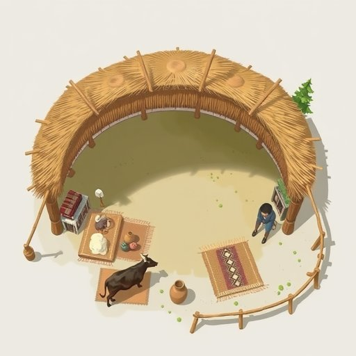
prompt
Gouache painting for a historical strategy game, flat opaque color shapes, simple graphic forms, matte paper texture, limited palette. A frontier trading place: a long open thatched shelter on posts, folded woven ponchos with stepped patterns, salt, cattle hides and clay jars laid out on cloths, two cows tied to a post. Single building, three-quarter view from above like a strategy game icon, the whole building visible and centered, isolated on a plain flat light grey background. Mapuche architecture of the temperate forests of southern Chile: rounded or oval houses with a thick thatched roof of grass and reeds that reaches almost to the ground, walls of wooden poles and woven branches, a low doorway facing east, wooden pole fences, green meadows and tall forest around.

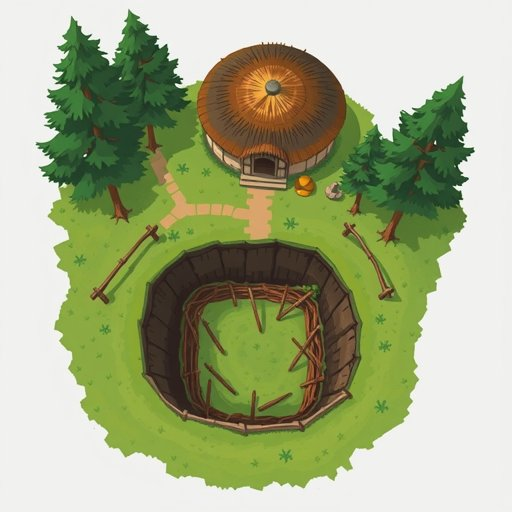
Peteroa y Mataquito, 1556–1557.
prompt
Gouache painting for a historical strategy game, flat opaque color shapes, simple graphic forms, matte paper texture, limited palette. A hidden pit trap on a forest path: a square pit with sharpened wooden stakes pointing up at the bottom, half covered with branches and leaves. Single building, three-quarter view from above like a strategy game icon, the whole building visible and centered, isolated on a plain flat light grey background. Mapuche architecture of the temperate forests of southern Chile: rounded or oval houses with a thick thatched roof of grass and reeds that reaches almost to the ground, walls of wooden poles and woven branches, a low doorway facing east, wooden pole fences, green meadows and tall forest around.

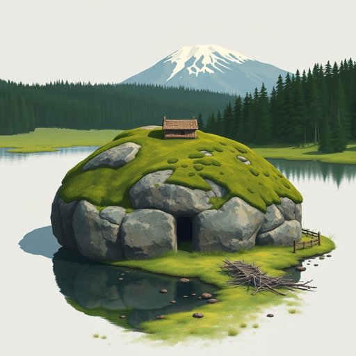
Solo el paisaje: ni rewe ni ceremonia.
prompt
Gouache painting for a historical strategy game, flat opaque color shapes, simple graphic forms, matte paper texture, limited palette. A huge old boulder covered in moss at the edge of a calm lake, with tall forest and a snowy volcano far behind, open sky. Single building, three-quarter view from above like a strategy game icon, the whole building visible and centered, isolated on a plain flat light grey background. Mapuche architecture of the temperate forests of southern Chile: rounded or oval houses with a thick thatched roof of grass and reeds that reaches almost to the ground, walls of wooden poles and woven branches, a low doorway facing east, wooden pole fences, green meadows and tall forest around.

Historiadores (01 R4): «Malón del toqui». Sin rewe ni toki kura.
prompt
Gouache painting for a historical strategy game, flat opaque color shapes, simple graphic forms, matte paper texture, limited palette. A large oval thatched house of a war leader, with a tall bundle of colihue cane lances leaning against it and a herd of captured cattle and horses inside a wooden pole corral beside it. Single building, three-quarter view from above like a strategy game icon, the whole building visible and centered, isolated on a plain flat light grey background. Mapuche architecture of the temperate forests of southern Chile: rounded or oval houses with a thick thatched roof of grass and reeds that reaches almost to the ground, walls of wooden poles and woven branches, a low doorway facing east, wooden pole fences, green meadows and tall forest around.

El juego le da cría de ganado. El nguillatuwe (con el rewe) queda fuera: es vida religiosa actual (C-74).
prompt
Gouache painting for a historical strategy game, flat opaque color shapes, simple graphic forms, matte paper texture, limited palette. The large oval thatched house of a lineage head, the biggest house of the valley, with a wide wooden pole corral full of woolly white and brown llama-like camelids and cows, gardens around it. Single building, three-quarter view from above like a strategy game icon, the whole building visible and centered, isolated on a plain flat light grey background. Mapuche architecture of the temperate forests of southern Chile: rounded or oval houses with a thick thatched roof of grass and reeds that reaches almost to the ground, walls of wooden poles and woven branches, a low doorway facing east, wooden pole fences, green meadows and tall forest around.

Historiadores (01 R4): «Corral de la remonta».
prompt
Gouache painting for a historical strategy game, flat opaque color shapes, simple graphic forms, matte paper texture, limited palette. A very large corral of rough poles full of brown and black horses, a thatched house beside it and a hitching rail with sheepskin saddle pads and rawhide bridles hanging. Single building, three-quarter view from above like a strategy game icon, the whole building visible and centered, isolated on a plain flat light grey background. Mapuche architecture of the temperate forests of southern Chile: rounded or oval houses with a thick thatched roof of grass and reeds that reaches almost to the ground, walls of wooden poles and woven branches, a low doorway facing east, wooden pole fences, green meadows and tall forest around.

Historiadores (01 R4): «Pewenal». El pewen como alimento; sin ceremonia.
antes: v1

prompt
Gouache painting for a historical strategy game, flat opaque color shapes, simple graphic forms, matte paper texture, limited palette. Three tall araucaria trees (monkey puzzle trees) with straight bare grey trunks and flat dark green umbrella-shaped crowns of spiky branches only at the very top, an oval thatched house between the trunks, piles of pine nuts in baskets on the ground. Single building, three-quarter view from above like a strategy game icon, the whole building visible and centered, isolated on a plain flat light grey background. Mapuche architecture of the temperate forests of southern Chile: rounded or oval houses with a thick thatched roof of grass and reeds that reaches almost to the ground, walls of wooden poles and woven branches, a low doorway facing east, wooden pole fences, green meadows and tall forest around.

prompt
Gouache painting for a historical strategy game, flat opaque color shapes, simple graphic forms, matte paper texture, limited palette. A frontier treaty ground: a long wide open shelter with a thatched roof on twelve wooden posts, two long rows of wooden benches facing each other underneath, jars of drink and baskets of food laid out, horses tied nearby. Single building, three-quarter view from above like a strategy game icon, the whole building visible and centered, isolated on a plain flat light grey background. Mapuche architecture of the temperate forests of southern Chile: rounded or oval houses with a thick thatched roof of grass and reeds that reaches almost to the ground, walls of wooden poles and woven branches, a low doorway facing east, wooden pole fences, green meadows and tall forest around.

Sin toki kura (consulta a comunidades, proceso/25).
prompt
Gouache painting for a historical strategy game, flat opaque color shapes, simple graphic forms, matte paper texture, limited palette. A war council ground in a meadow: a ring of long colihue cane lances stuck upright in the ground around a campfire, four saddled horses waiting beside it, forest behind. Single building, three-quarter view from above like a strategy game icon, the whole building visible and centered, isolated on a plain flat light grey background. Mapuche architecture of the temperate forests of southern Chile: rounded or oval houses with a thick thatched roof of grass and reeds that reaches almost to the ground, walls of wooden poles and woven branches, a low doorway facing east, wooden pole fences, green meadows and tall forest around.

Sin el rito: la consulta es imprescindible.
prompt
Gouache painting for a historical strategy game, flat opaque color shapes, simple graphic forms, matte paper texture, limited palette. A great treaty field in a wide meadow: two very long open thatched shelters facing each other across an open ground, rows of benches, many horses tied to posts, a few oval thatched houses at the edge, forest and volcano behind. Single building, three-quarter view from above like a strategy game icon, the whole building visible and centered, isolated on a plain flat light grey background. Mapuche architecture of the temperate forests of southern Chile: rounded or oval houses with a thick thatched roof of grass and reeds that reaches almost to the ground, walls of wooden poles and woven branches, a low doorway facing east, wooden pole fences, green meadows and tall forest around.
3 · Mejoras propias 8/8

prompt
Gouache painting for a historical strategy game, flat opaque color shapes, simple graphic forms, matte paper texture, limited palette. A hardened rawhide cuirass laced at the sides with leather thongs, and a rounded rawhide helmet beside it, on the ground. Single object centered, clear silhouette, isolated on a plain flat light grey background, three-quarter view.

prompt
Gouache painting for a historical strategy game, flat opaque color shapes, simple graphic forms, matte paper texture, limited palette. A sheaf of golden wheat tied with cord and a woven basket full of red and green apples. Single object centered, clear silhouette, isolated on a plain flat light grey background, three-quarter view.

prompt
Gouache painting for a historical strategy game, flat opaque color shapes, simple graphic forms, matte paper texture, limited palette. A bundle of sharpened wooden stakes tied together and a wooden digging spade lying on fresh dark soil. Single object centered, clear silhouette, isolated on a plain flat light grey background, three-quarter view.

Solo el remedio, sin el sanador ni la ceremonia.
prompt
Gouache painting for a historical strategy game, flat opaque color shapes, simple graphic forms, matte paper texture, limited palette. A bunch of fresh matico leaves, long wrinkled green leaves with orange round flower balls, and a small clay bowl with a green paste of crushed leaves. Single object centered, clear silhouette, isolated on a plain flat light grey background, three-quarter view.

prompt
Gouache painting for a historical strategy game, flat opaque color shapes, simple graphic forms, matte paper texture, limited palette. A coiled braided rawhide lasso and a short leather whip lying on a mountain path marked with many cattle hoofprints. Single object centered, clear silhouette, isolated on a plain flat light grey background, three-quarter view.

prompt
Gouache painting for a historical strategy game, flat opaque color shapes, simple graphic forms, matte paper texture, limited palette. A finely woven wool poncho folded on a wooden bench, with bold stepped geometric patterns in red, black and white. Single object centered, clear silhouette, isolated on a plain flat light grey background, three-quarter view.

prompt
Gouache painting for a historical strategy game, flat opaque color shapes, simple graphic forms, matte paper texture, limited palette. A sheepskin saddle pad, a rawhide bridle and a braided leather rein laid over a wooden pole fence. Single object centered, clear silhouette, isolated on a plain flat light grey background, three-quarter view.

prompt
Gouache painting for a historical strategy game, flat opaque color shapes, simple graphic forms, matte paper texture, limited palette. A long knotted wool cord, dark blue and cream, with a row of knots along its length, coiled on a flat stone. Single object centered, clear silhouette, isolated on a plain flat light grey background, three-quarter view.
4 · Accesorios (herramientas y armas para el 3D) 10/10

prompt
Gouache painting for a historical strategy game, flat opaque color shapes, simple graphic forms, matte paper texture, limited palette. A very long thin lance of colihue cane with a sharp fire-hardened point. Single object for a 3D model reference, side view, centered, whole object visible, plain flat light grey background, even light.

antes: v1

prompt
Gouache painting for a historical strategy game, flat opaque color shapes, simple graphic forms, matte paper texture, limited palette. A heavy wooden club carved from one piece of dark hardwood: a straight handle and a thick heavy curved head. Single object for a 3D model reference, side view, centered, whole object visible, plain flat light grey background, even light.

antes: v1

prompt
Gouache painting for a historical strategy game, flat opaque color shapes, simple graphic forms, matte paper texture, limited palette. A short curved wooden bow strung with sinew, lying beside three cane arrows with stone points. Single object for a 3D model reference, side view, centered, whole object visible, plain flat light grey background, even light.

prompt
Gouache painting for a historical strategy game, flat opaque color shapes, simple graphic forms, matte paper texture, limited palette. A torch made of a bundle of dry reeds tied with cord, burning at one end. Single object for a 3D model reference, side view, centered, whole object visible, plain flat light grey background, even light.

prompt
Gouache painting for a historical strategy game, flat opaque color shapes, simple graphic forms, matte paper texture, limited palette. A long wooden digging stick with a pointed end. Single object for a 3D model reference, side view, centered, whole object visible, plain flat light grey background, even light.

antes: v1 v2


prompt
Gouache painting for a historical strategy game, flat opaque color shapes, simple graphic forms, matte paper texture, limited palette. A neolithic stone axe: a wedge-shaped head of polished dark grey stone lashed with rawhide strips to the end of a wooden handle. Single object for a 3D model reference, side view, centered, whole object visible, plain flat light grey background, even light.

prompt
Gouache painting for a historical strategy game, flat opaque color shapes, simple graphic forms, matte paper texture, limited palette. A round woven basket of plant fibers with a carrying strap. Single object for a 3D model reference, side view, centered, whole object visible, plain flat light grey background, even light.

prompt
Gouache painting for a historical strategy game, flat opaque color shapes, simple graphic forms, matte paper texture, limited palette. A long thin wooden spindle with a wooden whorl and some spun cream wool. Single object for a 3D model reference, side view, centered, whole object visible, plain flat light grey background, even light.

prompt
Gouache painting for a historical strategy game, flat opaque color shapes, simple graphic forms, matte paper texture, limited palette. A Mapuche clay jug with a round body, one handle and a short spout, polished red and cream. Single object for a 3D model reference, side view, centered, whole object visible, plain flat light grey background, even light.

prompt
Gouache painting for a historical strategy game, flat opaque color shapes, simple graphic forms, matte paper texture, limited palette. A coiled braided rawhide lasso. Single object for a 3D model reference, side view, centered, whole object visible, plain flat light grey background, even light.
5 · Hojas para el 3D por edad (lo único por edad) 8/8


prompt
Gouache painting for a historical strategy game, flat opaque color shapes, simple graphic forms, matte paper texture, limited palette. Character turnaround reference sheet for 3D modeling: the same person shown side by side in front view and in side profile view, the same headwear and clothing in every view, standing in A-pose with arms held straight and out at 45 degrees from the body, open empty hands. Clothing: a plain solid bright red wool poncho, one flat uniform red color, reaching the knees, over a wrapped wool loincloth; bare head; barefoot. The person is a Mapuche man from Araucanía in southern Chile, a grown adult in his early thirties, with a mature face: a broad face, a strong wide jaw, high cheekbones, a straight wide nose, dark eyes, faint expression lines around the eyes, light copper-brown skin, dark brown lips the same tone as his skin, thick straight black hair to the shoulders held by a woven wool headband, a thick adult neck, broad shoulders and adult body proportions. Natural undyed wool and leather tones for everything except the red poncho. Even flat studio light, plain flat light grey background.


prompt
Gouache painting for a historical strategy game, flat opaque color shapes, simple graphic forms, matte paper texture, limited palette. Character turnaround reference sheet for 3D modeling: the same person shown side by side in front view and in side profile view, the same headwear and clothing in every view, standing in A-pose with arms held straight and out at 45 degrees from the body, open empty hands. Clothing: a plain solid bright red wool poncho, one flat uniform red color, reaching the knees, over a wrapped wool loincloth; a plain woven wool headband (trarilonko); leather sandals. The person is a Mapuche man from Araucanía in southern Chile, a grown adult in his early thirties, with a mature face: a broad face, a strong wide jaw, high cheekbones, a straight wide nose, dark eyes, faint expression lines around the eyes, light copper-brown skin, dark brown lips the same tone as his skin, thick straight black hair to the shoulders held by a woven wool headband, a thick adult neck, broad shoulders and adult body proportions. Natural undyed wool and leather tones for everything except the red poncho. Even flat studio light, plain flat light grey background.


prompt
Gouache painting for a historical strategy game, flat opaque color shapes, simple graphic forms, matte paper texture, limited palette. Character turnaround reference sheet for 3D modeling: the same person shown side by side in front view and in side profile view, the same headwear and clothing in every view, standing in A-pose with arms held straight and out at 45 degrees from the body, open empty hands. Clothing: a plain solid bright red wool poncho, one flat uniform red color, reaching the knees, over a wrapped wool loincloth; a woven wool headband (trarilonko); leather sandals; a woven sash with a stepped pattern and a woven bag on a strap. The person is a Mapuche man from Araucanía in southern Chile, a grown adult in his early thirties, with a mature face: a broad face, a strong wide jaw, high cheekbones, a straight wide nose, dark eyes, faint expression lines around the eyes, light copper-brown skin, dark brown lips the same tone as his skin, thick straight black hair to the shoulders held by a woven wool headband, a thick adult neck, broad shoulders and adult body proportions. Natural undyed wool and leather tones for everything except the red poncho. Even flat studio light, plain flat light grey background.


prompt
Gouache painting for a historical strategy game, flat opaque color shapes, simple graphic forms, matte paper texture, limited palette. Character turnaround reference sheet for 3D modeling: the same person shown side by side in front view and in side profile view, the same headwear and clothing in every view, standing in A-pose with arms held straight and out at 45 degrees from the body, open empty hands. Clothing: a plain solid bright red wool poncho, one flat uniform red color, reaching the knees, over wool trousers; a woven wool headband (trarilonko) with hanging tassels; leather sandals; a woven sash; a second cream poncho folded over one shoulder. The person is a Mapuche man from Araucanía in southern Chile, a grown adult in his early thirties, with a mature face: a broad face, a strong wide jaw, high cheekbones, a straight wide nose, dark eyes, faint expression lines around the eyes, light copper-brown skin, dark brown lips the same tone as his skin, thick straight black hair to the shoulders held by a woven wool headband, a thick adult neck, broad shoulders and adult body proportions. Natural undyed wool and leather tones for everything except the red poncho. Even flat studio light, plain flat light grey background.


prompt
Gouache painting for a historical strategy game, flat opaque color shapes, simple graphic forms, matte paper texture, limited palette. Character turnaround reference sheet for 3D modeling: the same person shown side by side in front view and in side profile view, the same headwear and clothing in every view, standing in A-pose with arms held straight and out at 45 degrees from the body, open empty hands. Clothing: a plain solid bright red wool poncho, one flat uniform red color, short, reaching the hips, over a wrapped wool loincloth; bare head; barefoot. The person is a Mapuche man from Araucanía in southern Chile, a grown adult in his early thirties, with a mature face: a broad face, a strong wide jaw, high cheekbones, a straight wide nose, dark eyes, faint expression lines around the eyes, light copper-brown skin, dark brown lips the same tone as his skin, thick straight black hair to the shoulders held by a woven wool headband, a thick adult neck, broad shoulders and adult body proportions. Natural undyed wool and leather tones for everything except the red poncho. Even flat studio light, plain flat light grey background.


prompt
Gouache painting for a historical strategy game, flat opaque color shapes, simple graphic forms, matte paper texture, limited palette. Character turnaround reference sheet for 3D modeling: the same person shown side by side in front view and in side profile view, the same headwear and clothing in every view, standing in A-pose with arms held straight and out at 45 degrees from the body, open empty hands. Clothing: a plain solid bright red wool poncho, one flat uniform red color, short, reaching the hips, over a wrapped wool loincloth; a woven wool headband (trarilonko); leather sandals; wool bands wrapped around the shins. The person is a Mapuche man from Araucanía in southern Chile, a grown adult in his early thirties, with a mature face: a broad face, a strong wide jaw, high cheekbones, a straight wide nose, dark eyes, faint expression lines around the eyes, light copper-brown skin, dark brown lips the same tone as his skin, thick straight black hair to the shoulders held by a woven wool headband, a thick adult neck, broad shoulders and adult body proportions. Natural undyed wool and leather tones for everything except the red poncho. Even flat studio light, plain flat light grey background.


prompt
Gouache painting for a historical strategy game, flat opaque color shapes, simple graphic forms, matte paper texture, limited palette. Character turnaround reference sheet for 3D modeling: the same person shown side by side in front view and in side profile view, the same headwear and clothing in every view, standing in A-pose with arms held straight and out at 45 degrees from the body, open empty hands. Clothing: a hardened rawhide cuirass laced at the sides over a plain solid bright red wool poncho, one flat uniform red color; a rounded rawhide helmet, worn in every view; leather sandals; wool bands around the shins. The person is a Mapuche man from Araucanía in southern Chile, a grown adult in his early thirties, with a mature face: a broad face, a strong wide jaw, high cheekbones, a straight wide nose, dark eyes, faint expression lines around the eyes, light copper-brown skin, dark brown lips the same tone as his skin, thick straight black hair to the shoulders held by a woven wool headband, a thick adult neck, broad shoulders and adult body proportions. Natural undyed wool and leather tones for everything except the red poncho. Even flat studio light, plain flat light grey background.


prompt
Gouache painting for a historical strategy game, flat opaque color shapes, simple graphic forms, matte paper texture, limited palette. Character turnaround reference sheet for 3D modeling: the same person shown side by side in front view and in side profile view, the same headwear and clothing in every view, standing in A-pose with arms held straight and out at 45 degrees from the body, open empty hands. Clothing: a hardened rawhide cuirass laced at the sides over a plain solid bright red wool poncho, one flat uniform red color; a captured steel Spanish morion helmet, worn in every view; leather sandals; a leather belt. The person is a Mapuche man from Araucanía in southern Chile, a grown adult in his early thirties, with a mature face: a broad face, a strong wide jaw, high cheekbones, a straight wide nose, dark eyes, faint expression lines around the eyes, light copper-brown skin, dark brown lips the same tone as his skin, thick straight black hair to the shoulders held by a woven wool headband, a thick adult neck, broad shoulders and adult body proportions. Natural undyed wool and leather tones for everything except the red poncho. Even flat studio light, plain flat light grey background.